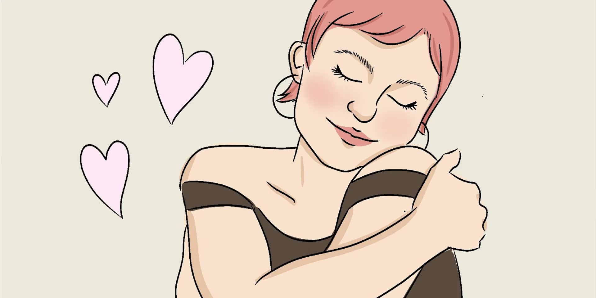
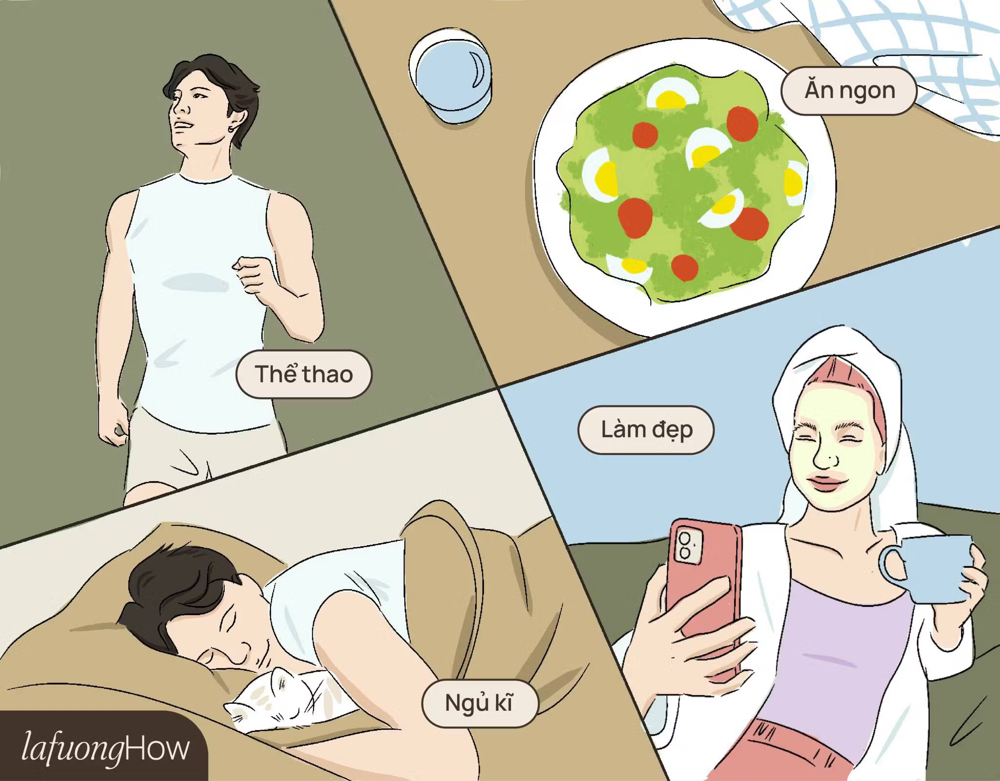
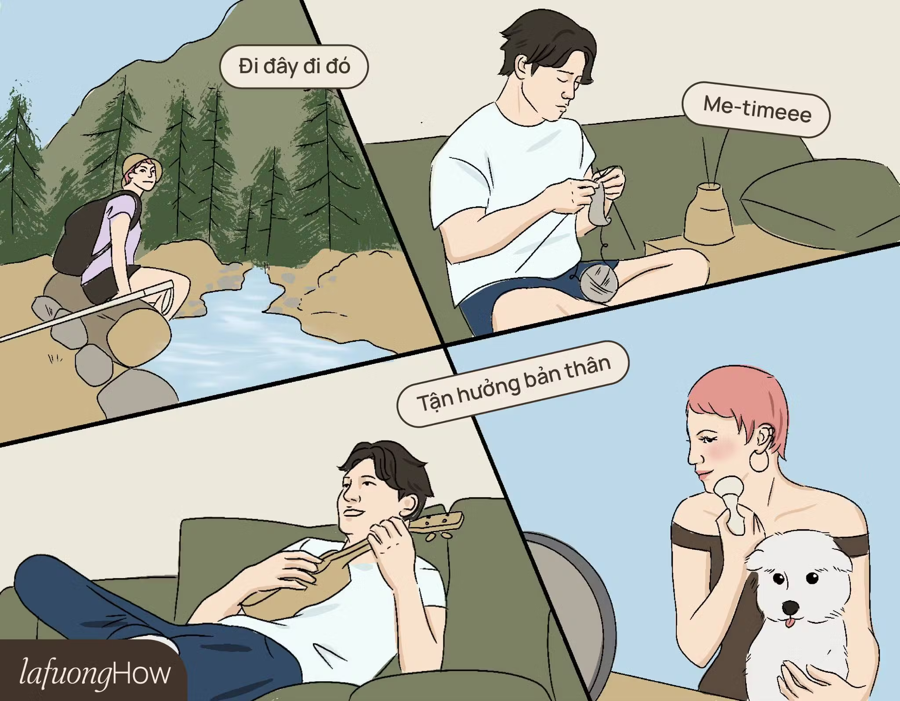
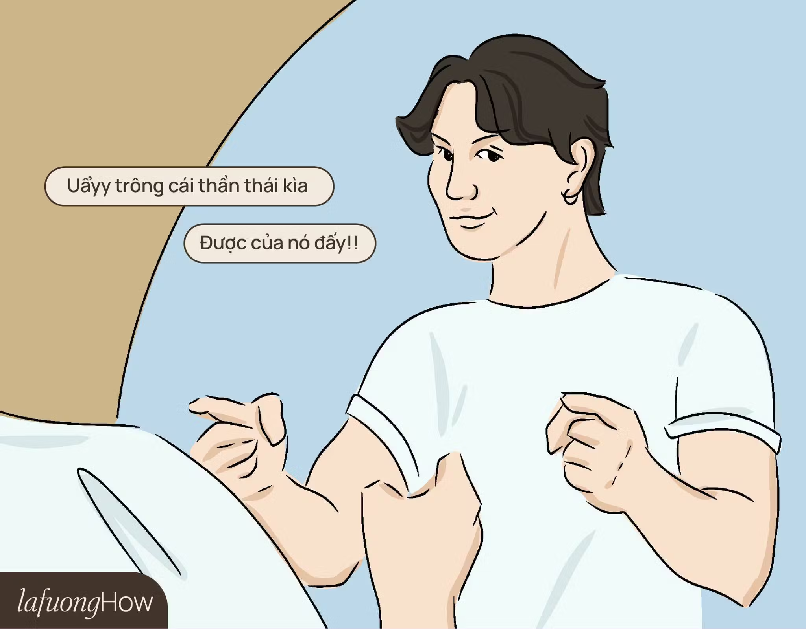
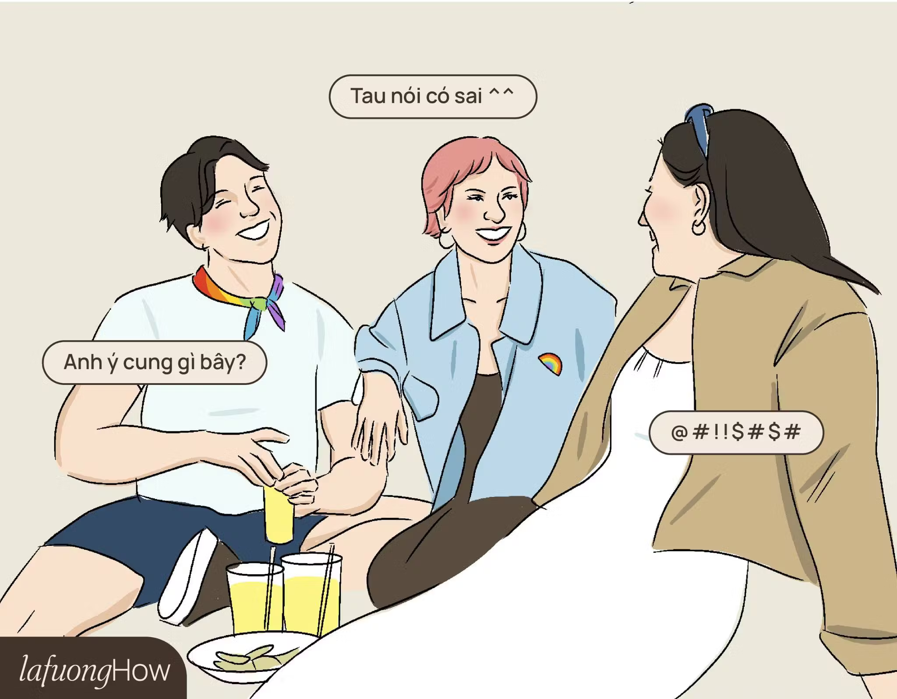
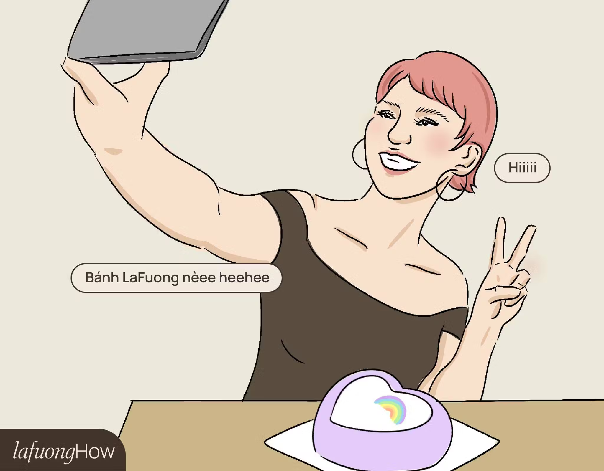

Bổ ích
Cách làm tui vui
Sweet Treats
Trong cuộc sống bận rộn và đầy áp lực, việc làm thế nào để tự mình tìm thấy niềm vui và hạnh phúc trở thành một kỹ năng quan trọng. Bài viết này sẽ gợi ý những cách đơn giản nhưng hiệu quả để bạn tự chăm sóc và nuôi dưỡng hạnh phúc từ bên trong.
Hạnh phúc thực sự bắt đầu từ chính bạn.
Để chăm sóc bản thân và tạo dựng hạnh phúc từ bên trong, dưới đây là những gì mà đội ngũ của Sweet Treats đang luyện tập hàng ngày để có một cuộc sống cân bằng, các bạn hãy tham khảo nhé!
Bước 01: Có sức khoẻ là có niềm vui - Sống lành mạnh
Một cơ thể khỏe mạnh là nền tảng cho một tinh thần mạnh mẽ. Chăm sóc sức khỏe không chỉ giúp bạn cảm thấy tốt hơn về mặt thể chất mà còn cải thiện trạng thái tinh thần. Cuộc sống bận rộn đã lấy đi của chúng ta quá nhiều thời gian. Đôi lúc việc kết nối lại với chính mình là điều mà chúng ta đã quên mất. Dành 30p tập luyện đi bộ hay chạy bộ, những bữa ăn homemade đầy đủ dinh dưỡng thay cho đồ tiện lợi trong siêu thị, một giấc ngủ sâu 8 tiếng, hay đắp mặt nạ xem phim với một cốc trà nóng. Bạn chỉ cần bắt đầu đơn giản vậy thôi đó.
Bước 02: Nuôi dưỡng sở thích
Niềm hạnh phúc không nhất thiết phải đến từ những thành tựu lớn, mà có thể từ những điều giản dị hàng ngày. Nhận ra và trân trọng những khoảnh khắc này giúp bạn cảm nhận hạnh phúc một cách bền vững hơn. Bạn có thể lên lịch cho những khoảng thời gian dành riêng cho bản thân mỗi tuần. Ví dụ, có thể là một buổi chiều cuối tuần đọc sách, trở về với thiên nhiên, đánh đàn, vẽ tranh, hoặc làm điều gì đó bạn thực sự yêu thích. Điều này giúp bạn giải toả căng thẳng và tạo ra khoảng không gian riêng tư để suy ngẫm và nghỉ ngơi.
Bước 03: Học cách nhìn nhận giá trị của bản thân
Đừng tiết kiệm lời khen dành cho những điều mình đã làm tốt. Nếu bạn thực hiện được bước 01 và bước 02, mỗi sáng thức dậy, hãy thử nhìn ngắm bản thân và tập yêu những nét đẹp của riêng mình. Điều này sẽ dần dần xây dựng sự tự tin và giúp bạn có một tinh thần lạc quan để vượt qua khó khăn và thử thách một cách nhẹ nhàng hơn. Một thành viên cốt cán trong đội ngũ Sweet Treats đã nhắc đến câu này trong quá trình tạo ra series Sweet Treats How: Don't forget to be Awesome. Ý là đừng quên trở nên tuyệt vời. Dù trai hay gái, hãy luôn thẳng lưng để vương miện không bao giờ rơi nhé!
Bước 04: Kết nối với những người yêu thương bạn
Ở cạnh những người giúp bạn cảm thấy tốt hơn về bản thân mình. Những người yêu thương và có năng lượng tích cực thường là những người sẵn sàng chia sẻ niềm vui, giúp đỡ bạn trong những lúc khó khăn và không ngừng khích lệ bạn vươn lên. Họ dành thời gian để hiểu những thiếu sót mà bạn có, giúp bạn học hỏi và hoàn thiện bản thân, trở thành phiên bản tốt nhất của chính mình. Điều quan trọng là, chỉ khi chính bạn cũng tỏa ra năng lượng tích cực, bạn mới có thể thu hút được những người giống như vậy xung quanh mình và tạo ra một môi trường sống đầy cảm hứng. Nhớ nhé!
Bước 05: Tự thưởng cho chính mình
Tự thưởng cho bản thân là cách bạn ghi nhận những nỗ lực và thành công của mình, dù là nhỏ hay lớn. Điều này giúp bạn cảm thấy động viên và yêu thương bản thân hơn. Ví dụ như là một buổi spa thư giãn, một bữa ăn ngon, hay là một chiếc bánh thật xinh xắn sau khi bạn đã hoàn thành tốt công việc của mình. Bằng cách tự thưởng cho bản thân, bạn không chỉ chăm sóc tinh thần mà còn nhắc nhở mình về giá trị của sự chăm chỉ và quyết tâm mình đã dành ra.

Tái bút:
Series Làm Tôi Vui này được Sweet Treats tạo ra là để chúc mừng cho Pride Month - Tháng Tự Hào 2024. Việc yêu thương bản thân cũng chính là cách mà cộng đồng LGBTIQ+ trên toàn cầu đã luôn truyền đi nguồn cảm hứng sống thật tích cực. Với thông điệp: Yêu là Yêu, bất kỳ ai, Sweet Treats tin rằng, Pride Month là một cơ hội để chúng ta nhận ra được sự đa dạng và khác biệt của mỗi người là một điều vô cùng đẹp đẽ và quý giá. Dù là màu sắc nào, hãy luôn tự tin yêu mến bản thân, tự tin yêu mến màu sắc của chính mình.

With so much love, Team Sweet Treats